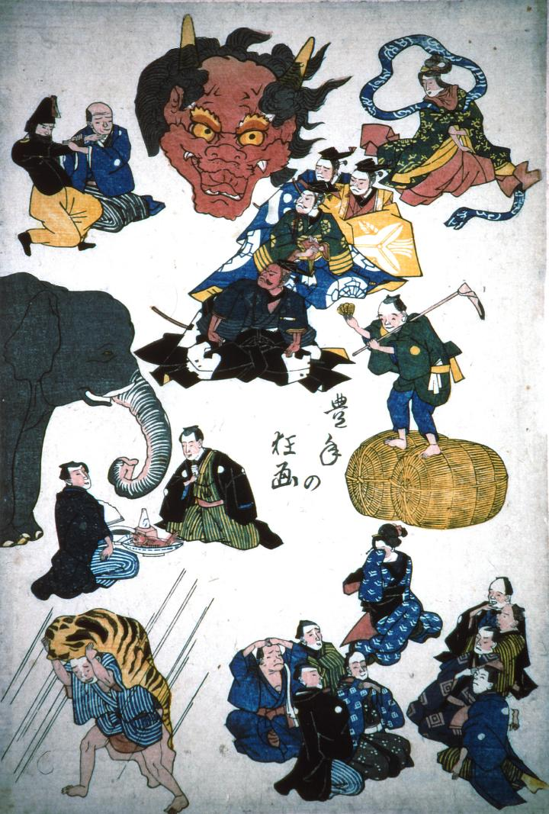

何かの判じ絵。さまざまな人の間に、大きな赤鬼の頭部が描かれている。鬼は2本の角があり、口を大きくあけている。
出典：親書誌：A5_pushkin_0022：豊年の狂画；ホウネンノキョウガ／日付：2011／資源識別子：A5_pushkin_0022_0001_0000
Copyright (c)2010- International Research Center for Japanese Studies, Kyoto, Japan. All rights reserved.